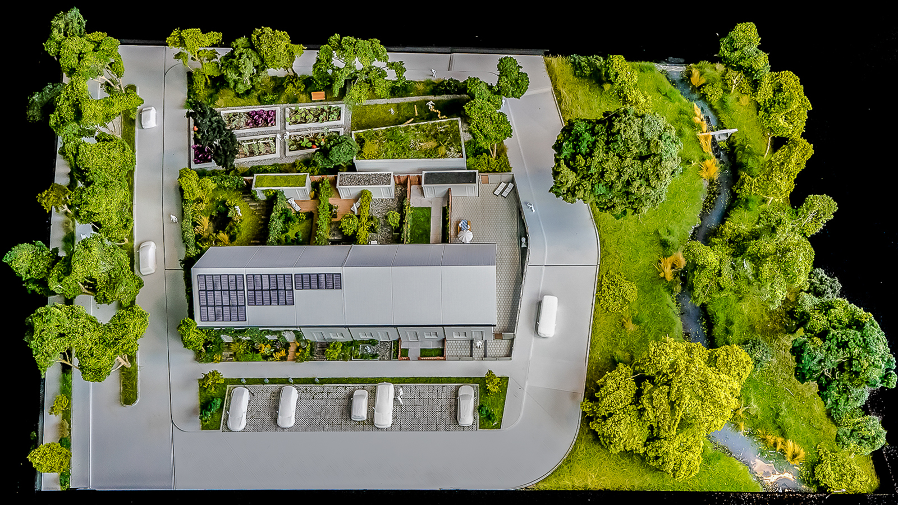
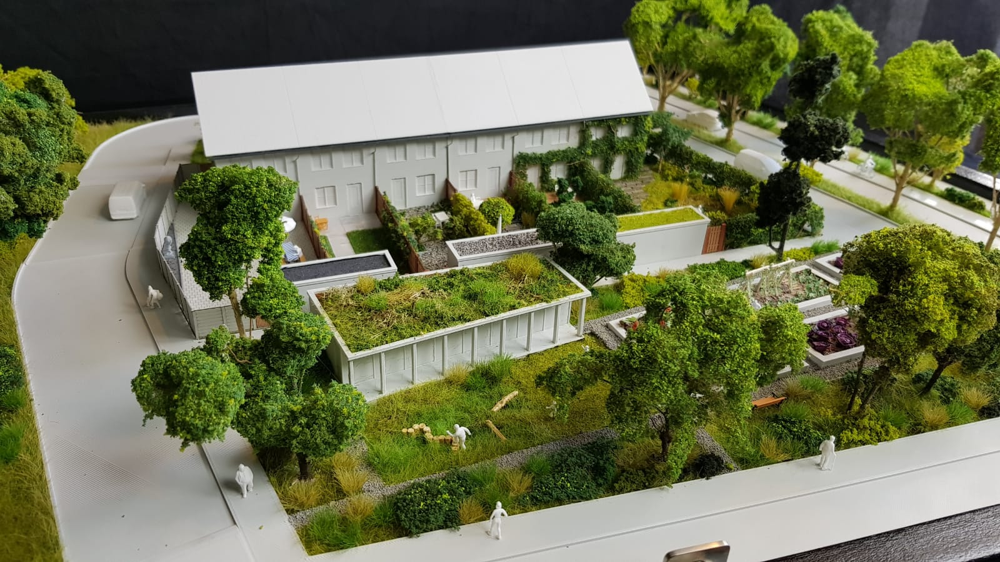
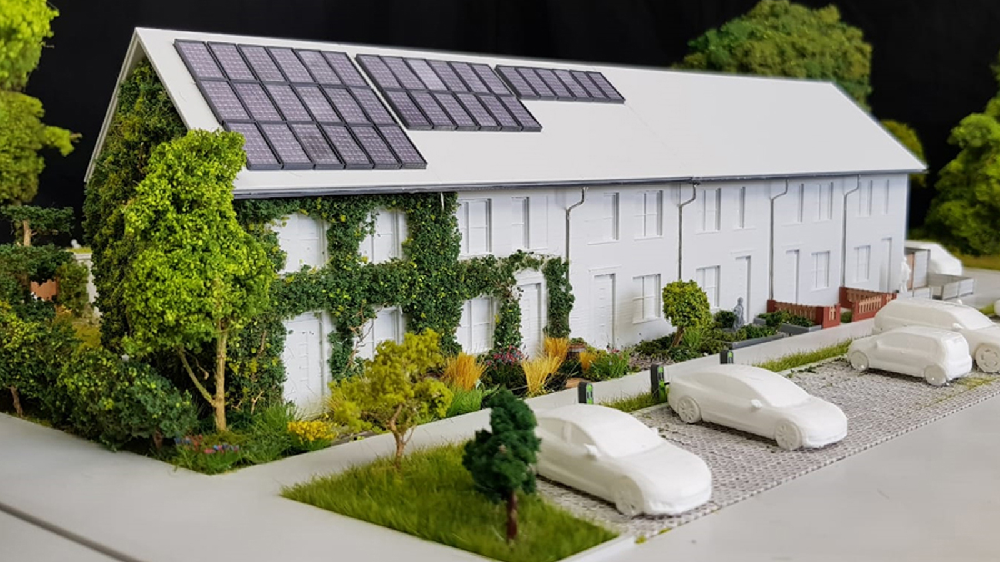
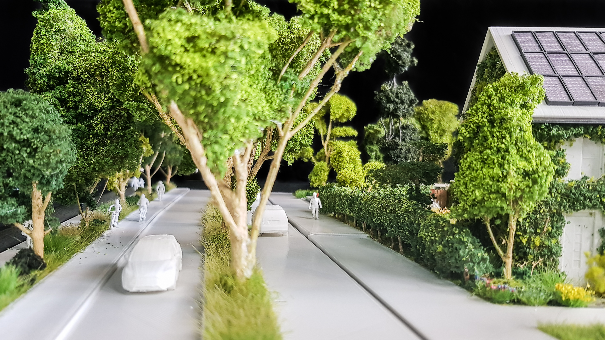
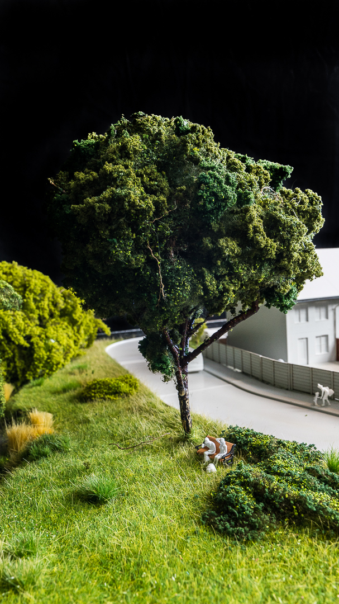
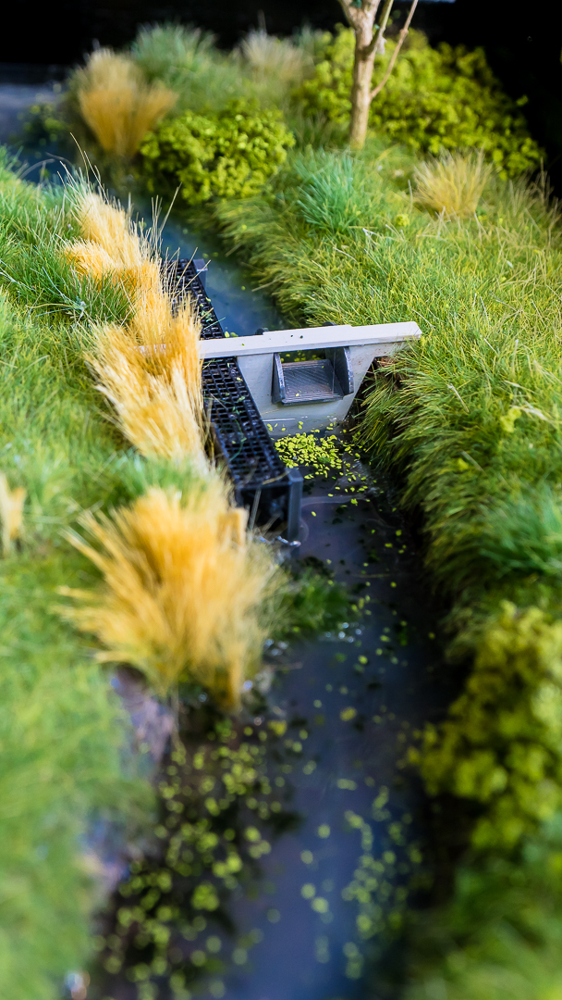
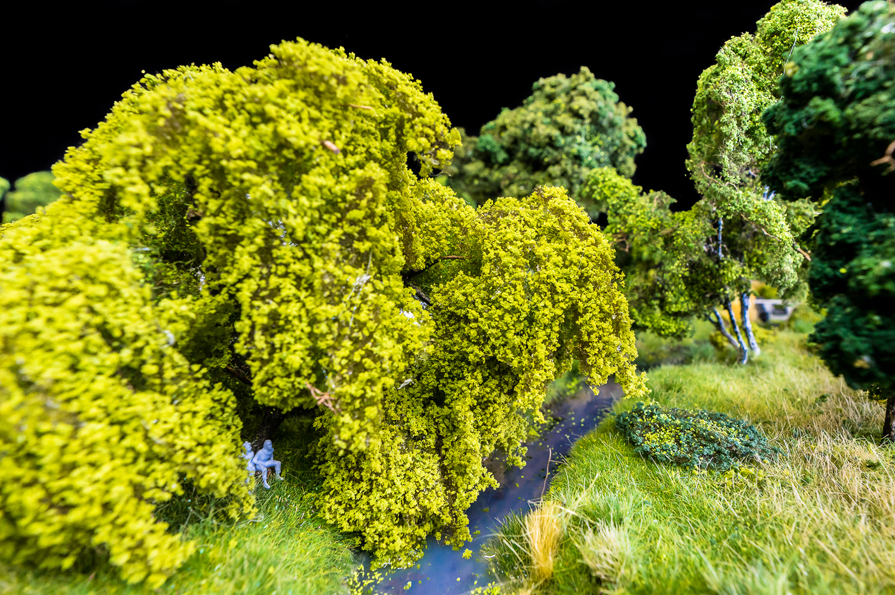
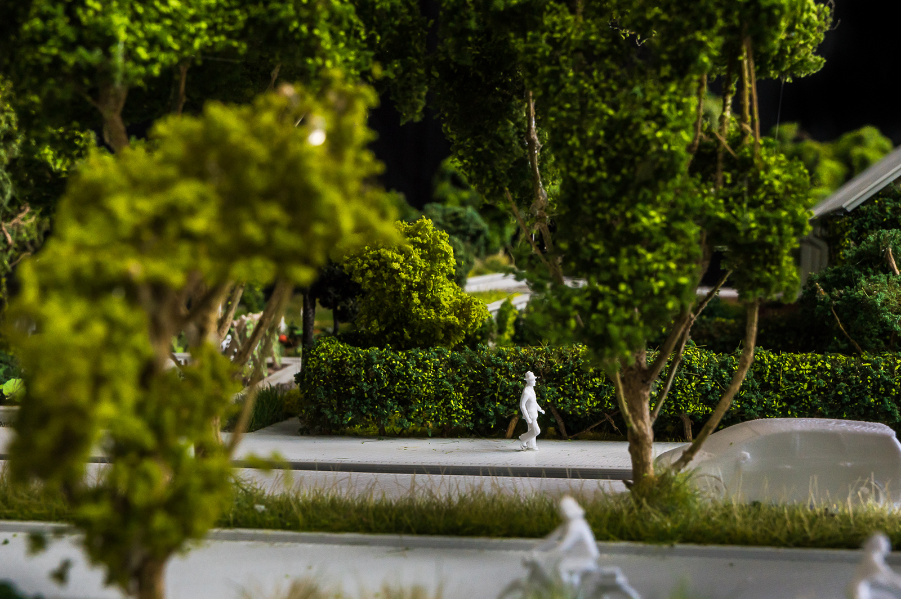
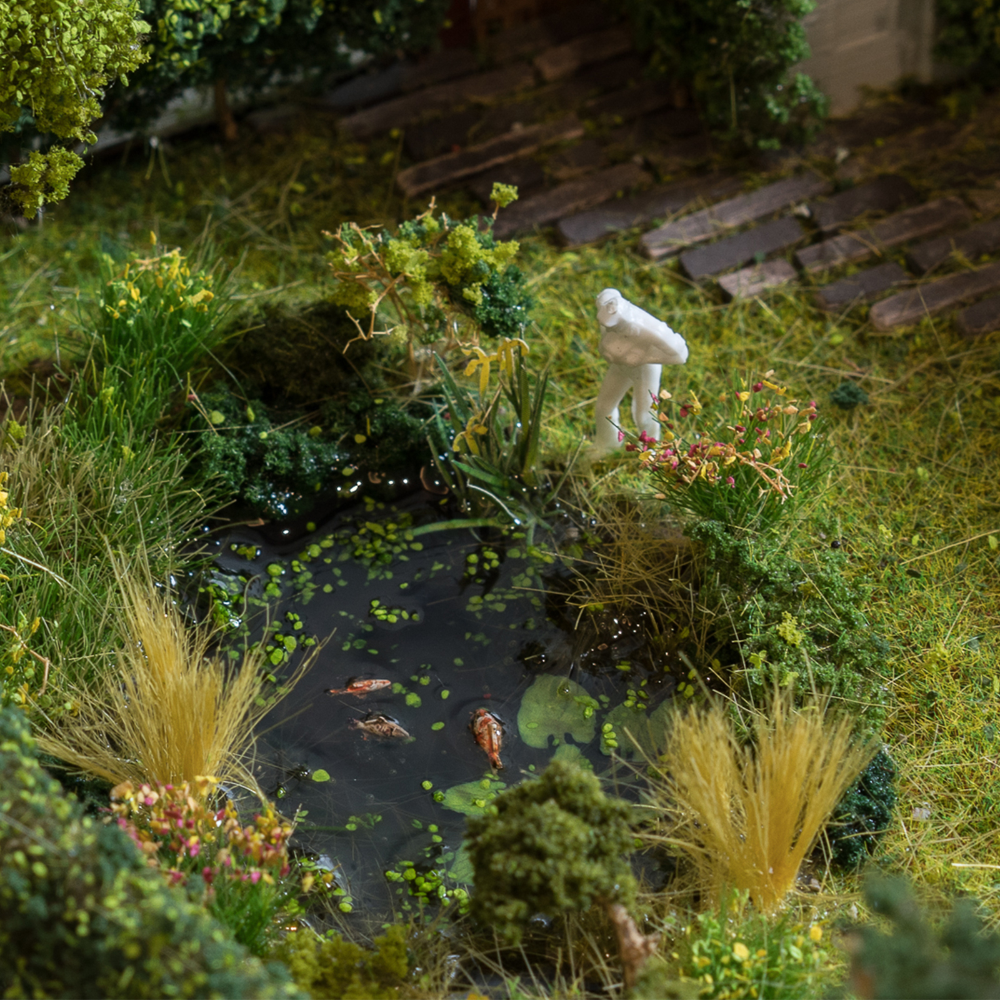
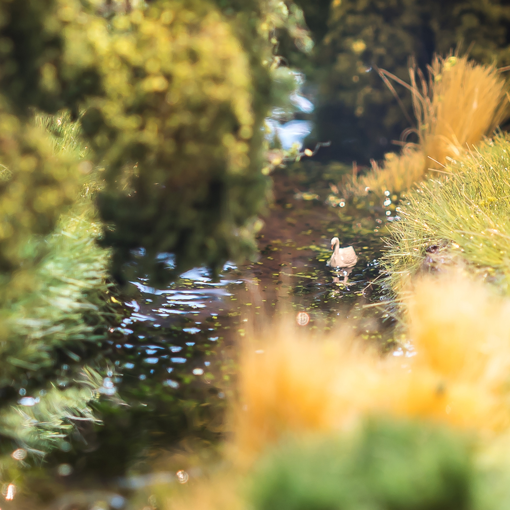

Klimaatadaptieve woonwijk
Opdrachtgever: Waterschap AA & Maas
Voor het Waterschap Aa en Maas hebben we in samenwerking met Lay3rs en Impress3d het project ‘klimaatadaptieve woonwijk’ mogen ontwikkelen.
Vanuit het waterschap werd de vraag neergelegd om een fictieve woonwijk te ontwikkelen met alle nieuwste ontwikkelingen en technieken van het waterschap. Hiermee wil het waterschap laten zien hoe er duurzaam kan worden omgegaan met energie en waterverbruik.
Het project is vooral bedoeld om mensen kennis te laten maken met de mogelijkheden van klimaatvriendelijke aanpassingen binnen een woonwijk. Ook wordt dit project gebruikt voor educatieve doeleinden en om bij te dragen aan meer bewustzijn over het klimaat.








